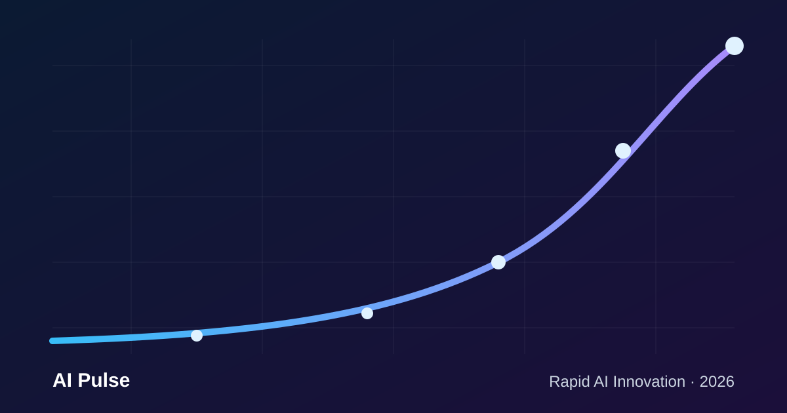
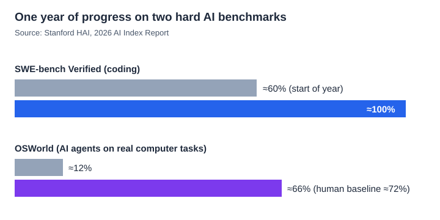
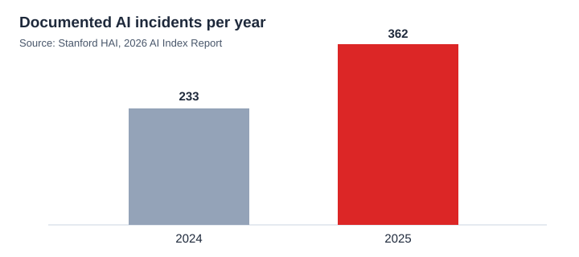

AI Trends · 2026
How Fast Is AI Advancing? Rapid AI Innovation in 2026

If it feels like there is a new AI breakthrough every week, you are not imagining it. Rapid AI innovation is the defining technology story of 2026: models that write working software, agents that operate a computer on their own, and tools used by hundreds of millions of people every day. But how fast is AI advancing, really? Is the hype ahead of the data?
This article looks at the evidence, mostly from Stanford's independent 2026 AI Index Report, and turns it into seven clear signs, plus what it means for your studies and career.
7 signs of rapid AI innovation in 2026
1. Hard benchmarks are being "solved" within a single year
Benchmarks are the exams researchers use to measure AI. For a long time, a good benchmark lasted years before models caught up. Not anymore. On SWE-bench Verified, a test built from real GitHub bug reports, top models went from about 60% to near 100% in one year. Several frontier models now meet or exceed human baselines on PhD-level science questions and competition mathematics.

2. AI agents moved from demos to doing real work
AI agents are systems that plan and carry out multi-step tasks, such as opening apps, filling forms or fixing code, instead of just answering a prompt. On OSWorld, a benchmark of real computer tasks across operating systems, agent success climbed from about 12% to around 66%, close to the human baseline of about 72%. Agents still fail roughly one task in three, so human review matters.
3. Adoption is faster than the PC or the internet
Generative AI reached 53% population adoption within three years, faster than personal computers or the internet did at the same stage. Organisational adoption has reached 88%, and four in five university students now use generative AI.
4. AI is starting to act like a scientist
AI breakthroughs in 2026 are no longer only about chatbots. AI earned a gold-medal score at the International Mathematical Olympiad and is increasingly used for discovery in biology, chemistry and physics. Its abilities are still "jagged", though: the same top model reads an analog clock correctly only about half the time.
5. Record money and computing power
US private AI investment reached about $285.9 billion in 2025, and the US hosts 5,427 data centres, more than ten times any other country. Almost every leading AI chip is made by a single foundry, TSMC, which shows how concentrated the hardware behind AI innovation is.
6. The global AI race has tightened
The performance gap between top US and Chinese models has effectively closed, with the lead changing hands several times since early 2025. Open-source contributions from outside the US and Europe are rising quickly on GitHub, giving more countries and languages a seat at the table.
7. Safety is not keeping pace
Speed has a cost. Documented AI incidents rose from 233 in 2024 to a record 362 in 2025, and reporting on responsible-AI benchmarks remains patchy. Faster progress makes testing, transparency and regulation more urgent, not less.

Generative AI vs agentic AI: what's the difference?
These two terms are often mixed up. Here is a simple way to tell them apart:
| Generative AI | Agentic AI | |
|---|---|---|
| What it does | Creates content: text, images, code, audio | Plans and completes multi-step goals |
| How you use it | You prompt, it responds | You set a goal, it acts using tools |
| Example | Drafting an email or a poster | Researching flights, comparing prices and filling the booking form |
| Main risk | Wrong or made-up answers | Wrong actions taken on your behalf |
In practice, agentic AI is built on top of generative models. The trend in 2026 is clear: the industry is moving from AI that talks to AI that does.
The impact of AI on jobs
The impact of AI on jobs has moved from prediction to reality. Stanford's researchers note that the fields seeing the largest productivity gains, such as customer support, software development and marketing, are also where early-career workers are feeling disruption first. At the same time, experts and the public disagree sharply: 73% of experts expect AI to improve how people do their jobs, compared with only 23% of the public.
For students and young professionals, the practical takeaway is the same everywhere, from Bengaluru to Boston:
- Learn to work with AI, not against it: prompt design, checking AI output and automating routine tasks.
- Build judgement skills that AI is still weak at: context, ethics, client relationships and decisions under uncertainty.
- Show proof: a portfolio of real projects that use AI beats a certificate alone.
The future of AI in the next 5 years: what to watch
- Reliable agents. The jump from 66% to 95%+ task success will decide whether agents become everyday co-workers.
- AI in science and medicine. Expect more AI-assisted discoveries and clinical tools, with strong pressure for evidence and safety.
- Energy and chips. Data-centre power use and chip supply will shape who can build frontier AI.
- Regulation and trust. Rules will spread, but trust in governments to regulate AI varies widely by country.
- AI skills in education. Over 80% of students already use AI for schoolwork, while clear school policies lag behind.
Frequently asked questions
How fast is AI advancing in 2026?
Very fast. Coding-benchmark scores rose from about 60% to nearly 100% in a year, and AI agents improved from about 12% to 66% on real computer tasks.
Is AI progress slowing down?
The 2026 data says no. Capability is accelerating, although models remain uneven, excellent at some tasks and surprisingly weak at others.
What are the latest AI trends in 2026?
Agentic AI, AI for scientific discovery, record investment in data centres, a tighter US-China race, open-source growth and rising attention to AI safety.
Will AI take my job?
AI is more likely to reshape jobs than erase them, but early-career roles in high-productivity fields are feeling it first. Learning to use AI well is the best protection.
Found this useful?
Share it with a friend who keeps asking "how fast is AI advancing?"
Sources
- Stanford HAI, The 2026 AI Index Report: Top Takeaways
- Stanford HAI, Inside the AI Index: 12 Takeaways from the 2026 Report